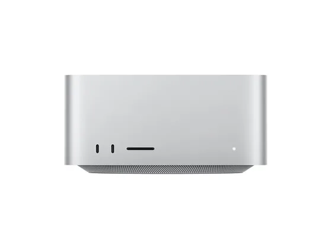
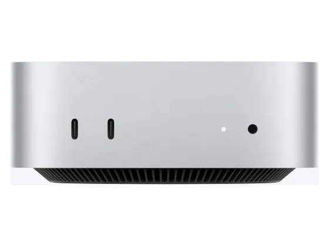
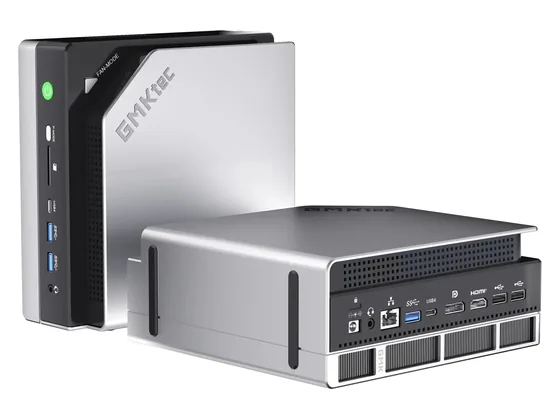
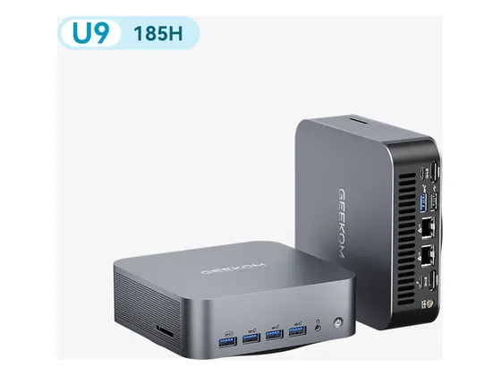

Apple Mac Studio M5 Max : avis, tests et prix
Le verdict en une phrase. Des performances de très haut niveau dans un boîtier compact et silencieux, avec une connectique exhaustive.
N° 2 sur 10 dans le top 10 Ordinateurs de bureau création.

Pour qui ?
Vous avez besoin de performances de très haut niveau, en silence, avec tous les ports.
Vous voulez une machine modulable.
Le consensus de la presse
Une seule note chiffrée à ce jour : 9,0/10, attribuée par GeekCulture. À lire comme un avis isolé, pas comme un consensus. Dernier test relevé : octobre 2026.
Où l'acheter
La configuration peut différer d'un marchand à l'autre : vérifiez la fiche avant d'acheter. Seuls les liens Amazon sont affiliés à ce jour ; les autres sont de simples liens directs. Aucun n'influence les notes ni le classement.
Tous les tests recensés
Chaque ligne renvoie vers le test d'origine. Les notes sont converties sur 10 ; « test » signale un article sans note chiffrée. Notre méthode.
- GeekCulture9,0
- Les Numériquestest
- Les Numériquestest
- Wiredtest
Source du relevé : Synthèse CommentChoisir.
Les alternatives pour le même usage
Tout le top 10 →
Apple Mac mini M5 ProLa puissance d'une station de travail dans un boîtier de 12,7 cm, avec Thunderbolt 5 : le meilleur compromis pour la photo et le montage. N° 3 · Le graphique intégré record
GMKtec EVO-X2La puce graphique intégrée la plus rapide du marché, au niveau d'une RTX 4060 mobile, et beaucoup de mémoire pour l'IA locale. N° 4 · Le bon plan puissance
Geekom GT1 MegaProcesseur haut de gamme, Wi-Fi 7, double USB4 et double réseau 2,5 GbE pour moins de 900 € : beaucoup de puissance pour le prix.Questions fréquentes
Que pense la presse de l'ordinateur Apple Mac Studio M5 Max ?
La note presse moyenne est de 9,0/10, calculée sur 1 note. Des performances de très haut niveau dans un boîtier compact et silencieux, avec une connectique exhaustive.
Quels sont les points faibles relevés par les tests ?
Aucune modularité ; Prix élevé.
À qui s'adresse le modèle Apple Mac Studio M5 Max ?
Vous avez besoin de performances de très haut niveau, en silence, avec tous les ports. À éviter si : vous voulez une machine modulable.
Où l'acheter, et à quel prix ?
Prix relevés le 02/10/2026 : 2 999 € chez Darty ; 2 999 € chez Amazon. Les prix changent vite et la configuration peut différer d'un marchand à l'autre : seul le prix affiché par le marchand fait foi.